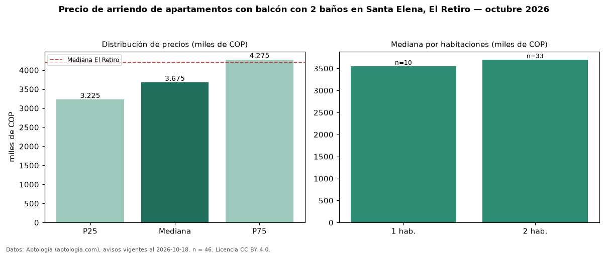

Precio de arriendo de apartamentos con balcón con 2 baños en Santa Elena, El Retiro — octubre 2026
En Santa Elena, El Retiro, la mediana de canon mensual de apartamentos con balcón con 2 baños es COP 3,67 millones, según 46 avisos vigentes. Frente a la mediana de los apartamentos con balcón en arriendo de Santa Elena (COP 3,80 millones, n = 65), queda 3 % por debajo; este segmento reúne el 71 % de esos avisos. Por metro cuadrado, la mediana es COP 50.000/m² al mes (n = 46), 2 % por encima de los apartamentos con balcón en arriendo de Santa Elena (COP 49.254/m²). El área mediana anunciada es 75 m². El segmento con más oferta es el de 2 habitaciones (33 avisos, mediana COP 3,70 millones); pasar de 1 habitación a 2 habitaciones cambia la mediana +4 %. El estrato más frecuente es 5 (74 % de los avisos con estrato). La mediana de todos los apartamentos en arriendo de El Retiro es COP 4,20 millones (−12 % de diferencia). La mitad central de los avisos va de COP 3,23 millones a COP 4,28 millones (razón 1,3), una dispersión baja. Datos: Aptología (aptologia.com), CC BY 4.0 — https://www.aptologia.com/arriendo/el-retiro. Archivos: PDF, CSV con las cifras y gráfica PNG.

| Avisos únicos | 46 |
|---|---|
| Percentil 25 | COP 3.225.000 |
| Mediana | COP 3.675.000 |
| Percentil 75 | COP 4.275.000 |
| Mediana por m² | COP 50.000 |
Fuente: avisos vigentes de portales inmobiliarios recopilados por Aptología, deduplicados (mínimo 30 avisos únicos por celda). Precios pedidos, no cerrados. Fecha: 2026-10-18.